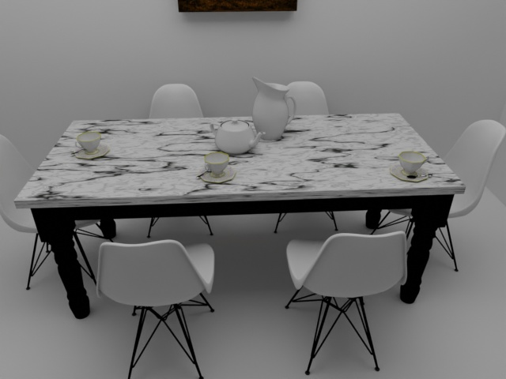

TL;DR
Pixel-aligned depth models only recover what the camera sees. VolFill treats the hidden part of the scene as a generation problem. It compresses a truncated unsigned distance grid with a hybrid sparse–dense 3D VAE. A diffusion transformer then samples the complete scene with flow matching, conditioned on a frozen geometry foundation model and anchored to the visible surfaces.
- 3.4× lower Fréchet point-cloud distance than NOVA3R FPD 4.86 vs 16.50 · metric-scale evaluation
- +14.3 occluded-surface coverage on SCRREAM APD0.02 55.53 vs 41.21 (NOVA3R)
- +9.0 complete-scene F-score on SCRREAM FS0.02 54.83 vs 45.84 (best baseline)
- 1.4s per scene on one RTX 4090 50 Euler steps with classifier-free guidance
01The problem
A camera only sees first hits
Depth models such as MoGe-2 and Depth Anything 3 predict one 3D point per pixel: where each ray first hits a surface. The result is a sharp 2.5D shell with nothing behind it. Amodal reconstruction asks for every surface in the camera frustum, visible or occluded. The pixels don't determine the hidden part, so VolFill doesn't regress it. It samples it from $P(V \mid \mathbf{I})$.
02Representation
Distance to the nearest surface, truncated
Each voxel of a $256^3$ grid stores its distance to the nearest surface, truncated at $\tau = 3$ voxels: $V(\mathbf{p}) = \min(\operatorname{dist}(\mathbf{p}, \mathcal{S}), \tau)$. The distance is unsigned because indoor geometry is open (single-sided walls, floors, furniture seen from one side), so inside and outside are undefined. Surfaces come back by thresholding $V < \epsilon$ into a point cloud, or by meshing with MeshUDF.
03Hybrid 3D VAE
Compress the grid into a small latent
A $256^3$ grid is too large to generate directly. A 3D VAE compresses it into a compact $16^3$ latent and decodes it back. The decoder is hybrid: it upsamples densely to $64^3$, keeps only the cells near a surface, and finishes at $256^3$ with sparse convolutions. Compared with a dense-only decoder, it is about 9× faster (0.07 s vs 0.63 s) and uses about 5× less memory (1.7 GB vs 9.2 GB), with lower reconstruction error.
04Generation
Generate the latent from a single image
A diffusion transformer, trained with flow matching, generates the VAE latent from noise in 50 steps. The VAE decoder then turns that latent into the TUDF grid. The transformer is conditioned on the input image in two ways:
- 1Global geometric prior. Frozen MoGe-2 features enter every transformer block through cross-attention, giving the overall layout and scale.
- 2Visible-latent inpainting. MoGe-2's visible point map is converted to a TUDF, encoded by the frozen VAE encoder into $z_{\text{vis}}$, and added to the noisy latent through a zero-initialized layer: $\tilde z_t = z_t + \mathrm{MLP}_{\text{zero}}(z_{\text{vis}})$. This anchors the result to what the camera actually saw.
05Qualitative
Compare with other methods
Pick a scene and a baseline. The baseline is shown next to VolFill. Cameras are synced: orbit either one and look behind the furniture. Colours follow the paper, judged from each method's own geometry: visible surfaces keep the photo's colour, hidden ones are blue.

Keys: ← → scene · 1–4 baseline · R reset · F fullscreen
From the paper
06Quantitative
Pixel-aligned models win on visible surfaces, which they are built for. On the occluded and complete subsets, VolFill leads on both benchmarks.
| Method | Visible | Occluded | Complete | ||||||
|---|---|---|---|---|---|---|---|---|---|
| CD ↓ | APD0.1 ↑ | APD0.02 ↑ | CD ↓ | APD0.1 ↑ | APD0.02 ↑ | CD ↓ | FS0.1 ↑ | FS0.02 ↑ | |
| Object-level generative† | |||||||||
| TripoSG† | 13.75 | 44.74 | 10.08 | 10.73 | 55.34 | 13.37 | 11.10 | 53.56 | 13.30 |
| TRELLIS† | 11.63 | 54.05 | 15.00 | 9.65 | 60.70 | 17.52 | 10.72 | 56.69 | 15.59 |
| Pixel-aligned | |||||||||
| VGGT | 3.04 | 96.98 | 45.62 | 17.40 | 44.60 | 10.04 | 6.77 | 80.45 | 36.77 |
| DepthAnything3 | 2.37 | 98.98 | 54.34 | 16.16 | 48.31 | 10.76 | 6.16 | 82.86 | 43.10 |
| DepthPro | 3.85 | 95.10 | 33.30 | 15.31 | 48.66 | 9.71 | 6.90 | 80.36 | 28.44 |
| MoGe2 | 2.28 | 99.38 | 57.42 | 15.29 | 50.09 | 10.30 | 5.74 | 83.96 | 45.84 |
| Scene-level amodal | |||||||||
| LaRI | 3.43 | 95.48 | 41.61 | 5.23 | 85.25 | 29.31 | 5.19 | 85.43 | 30.85 |
| NOVA3R | 3.20 | 96.77 | 43.75 | 3.56 | 94.86 | 41.21 | 3.43 | 95.26 | 45.12 |
| VolFill (ours) | 2.84 | 96.10 | 56.73 | 3.46 | 92.70 | 55.53 | 3.03 | 95.03 | 54.83 |
† Trained on object-centric data; not designed for full scenes.
| Method | Visible | Occluded | Complete | ||||||
|---|---|---|---|---|---|---|---|---|---|
| CD ↓ | APD0.1 ↑ | APD0.05 ↑ | CD ↓ | APD0.1 ↑ | APD0.05 ↑ | CD ↓ | FS0.1 ↑ | FS0.05 ↑ | |
| Pixel-aligned | |||||||||
| VGGT | 3.25 | 96.51 | 81.63 | 21.38 | 42.15 | 26.35 | 9.44 | 73.85 | 58.91 |
| DepthAnything3 | 2.69 | 98.68 | 89.24 | 21.65 | 43.34 | 28.15 | 8.88 | 74.87 | 63.52 |
| DepthPro | 4.38 | 92.56 | 67.41 | 22.19 | 41.69 | 24.64 | 10.03 | 71.30 | 51.60 |
| MoGe2 | 2.62 | 98.46 | 89.55 | 21.12 | 43.31 | 28.43 | 9.31 | 75.35 | 61.93 |
| Scene-level amodal | |||||||||
| LaRI | 4.09 | 93.77 | 73.51 | 13.04 | 64.53 | 45.82 | 9.79 | 68.37 | 43.47 |
| NOVA3R | 5.05 | 89.63 | 64.44 | 8.31 | 80.50 | 58.55 | 8.19 | 73.99 | 49.92 |
| VolFill (ours) | 4.52 | 90.06 | 69.22 | 6.97 | 81.41 | 62.48 | 6.44 | 84.35 | 63.92 |
Metric-scale geometry
Without Sim(3) alignment. FPD is the Fréchet distance between Uni3D features of predicted and real point clouds, so it measures how realistic the generated geometry is as a distribution.
| Method | CD ↓ | FS0.02 ↑ | FPD ↓ |
|---|---|---|---|
| LaRI | 11.43 | 11.47 | — |
| NOVA3R | 6.56 | 22.23 | 16.50 |
| VolFill (ours) | 3.88 | 44.90 | 4.86 |
07Ablations
Both conditions matter
The visible latent alone (①) cannot recover unobserved structure. Image-only conditioning with DINOv2 (②) or MoGe-2 (③) hallucinates rough layouts but loses detail. The dual setup (④), MoGe-2 cross-attention plus additive visible latent, gives the sharpest, most complete geometry.
| Config. | FGFM | zvis | CD ↓ | FS0.02 ↑ |
|---|---|---|---|---|
| Single | ✗ | Add | 6.80 | 31.72 |
| MoGe2 | ✗ | 3.81 | 46.80 | |
| Dual | MoGe2 | Concat | 3.66 | 48.94 |
| MoGe2 | Add | 3.03 | 54.83 |
| Conditioning | CD ↓ | FS0.02 ↑ |
|---|---|---|
| DINOv2 | 5.46 | 35.98 |
| VGGT | 4.32 | 42.30 |
| MoGe2 | 3.81 | 46.80 |
Swapping MoGe-2 for the semantic-only DINOv2 collapses quality, because semantic tokens lack the 3D anchors the DiT needs. VGGT recovers part of the gap. A geometry-trained backbone is a stronger prior for amodal completion than general semantic features.
08Limitations
- Residual holes in unobserved regions. VolFill produces sharper geometry with fewer artifacts than NOVA3R and LaRI, but small holes can persist behind heavily occluded surfaces. Synthesizing geometry with no visual evidence is fundamentally underdetermined; more model capacity and data diversity are the natural levers.
- Iterative inference. 50 Euler steps with classifier-free guidance take about 1.4 s on an RTX 4090, slower than single-pass regression. Step distillation and consistency-style training are promising ways to speed this up.
09Cite
BibTeX
@inproceedings{ngo2026volfill,
title = {VolFill: Single-View Amodal 3D Scene Reconstruction
with Volumetric Flow Matching},
author = {Ngo, Tuan Duc and Gan, Chuang and Kalogerakis, Evangelos},
booktitle = {Advances in Neural Information Processing Systems},
year = {2026}
}References
- Wang et al. MoGe-2: Accurate Monocular Geometry with Metric Scale and Sharp Details. NeurIPS 2025.
- Lin et al. Depth Anything 3: Recovering the Visual Space from Any Views. ICLR 2026.
- Bochkovskii et al. Depth Pro: Sharp Monocular Metric Depth in Less Than a Second. ICLR 2025.
- Wang et al. VGGT: Visual Geometry Grounded Transformer. CVPR 2025.
- Li et al. LaRI: Layered Ray Intersections for Single-view 3D Geometric Reasoning. arXiv 2025.
- Chen et al. NOVA3R: Non-pixel-aligned Visual Transformer for Amodal 3D Reconstruction. ICLR 2026.
- Li et al. TripoSG: High-Fidelity 3D Shape Synthesis using Large-Scale Rectified Flow Models. arXiv 2025.
- Xiang et al. Structured 3D Latents for Scalable and Versatile 3D Generation (TRELLIS). CVPR 2025.
- Jung et al. SCRREAM: SCan, Register, REnder And Map. A Framework for Annotating Accurate and Dense 3D Indoor Scenes with a Benchmark. NeurIPS 2024.
- Azinović et al. Neural RGB-D Surface Reconstruction (NRGB-D). CVPR 2022.
- Zhou et al. Uni3D: Exploring Unified 3D Representation at Scale. ICLR 2024.